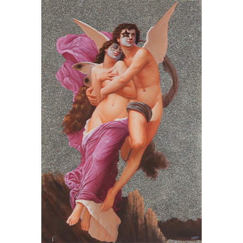
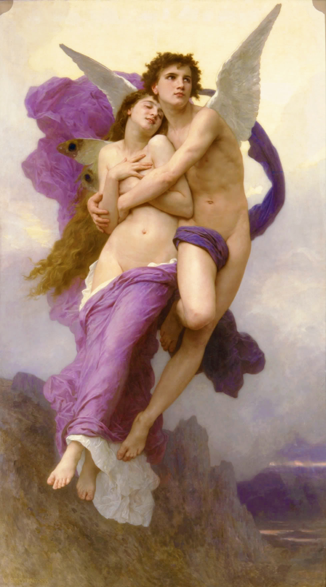
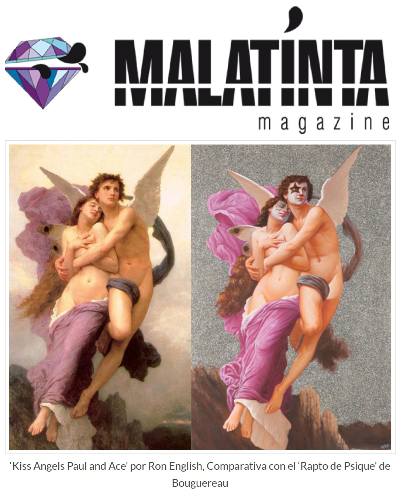

Notes
This work references William-Adolphe Bouguereau’s painting The Abduction of Psyche.
The painting also references Paul Stanley and Ace Frehley of KISS in their signature makeup.
Ancillary Documentation


